Mob architecture
Let the team discover what they already know
Martin Carlsson @Ystromm
Built with reveal.js
Drawing together - learning together
Meet Larry
The architect.
Architects can be scary
The team became kind of quiet
Architecture induced helplessness.
High tech tools
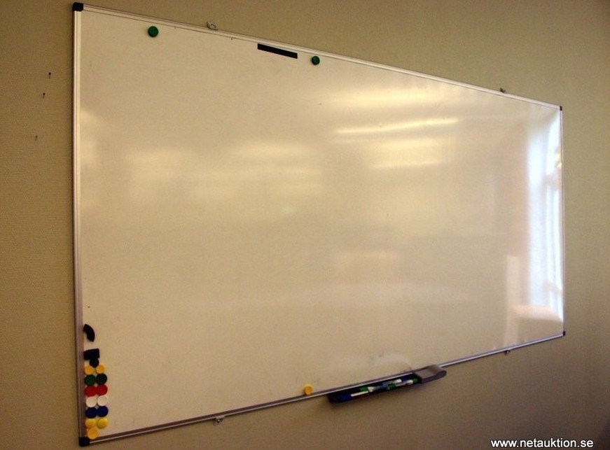
The empty box
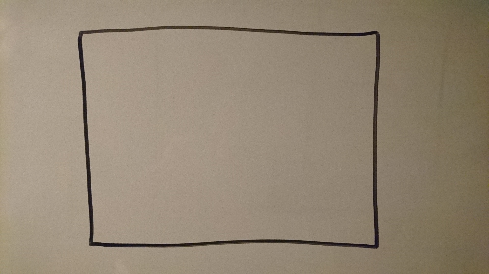Start simple.
Roles and interfaces
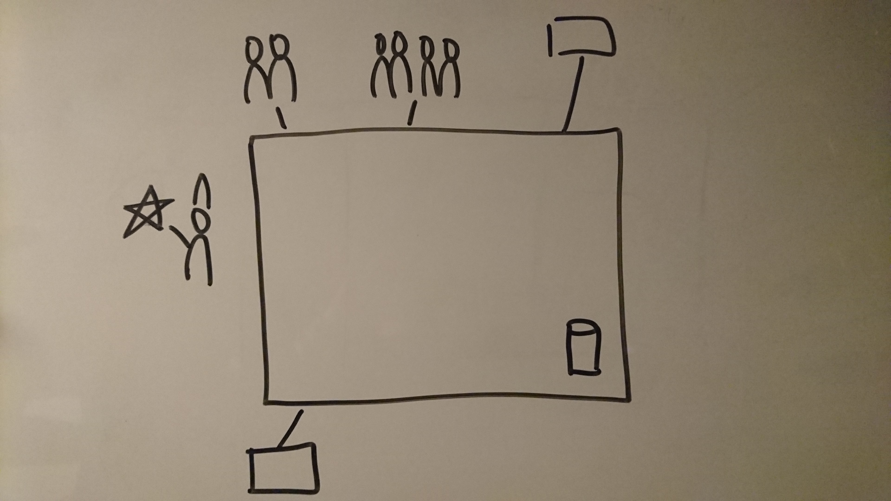User categories/personas and neighbouring systems.
What did you say it was called?
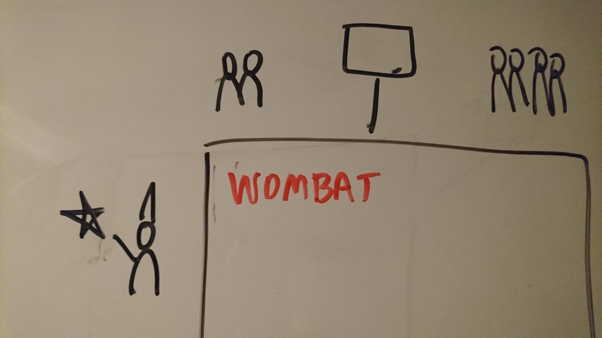Put it on the board, if it sticks; Shift+F6.
Internal stuff
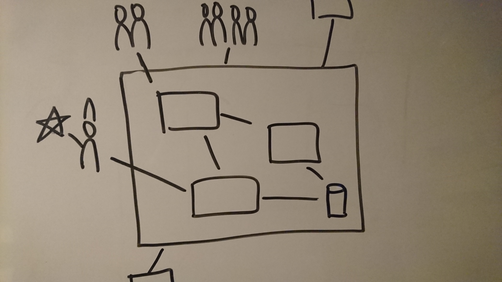The devil is in the details.
Crack skiers only
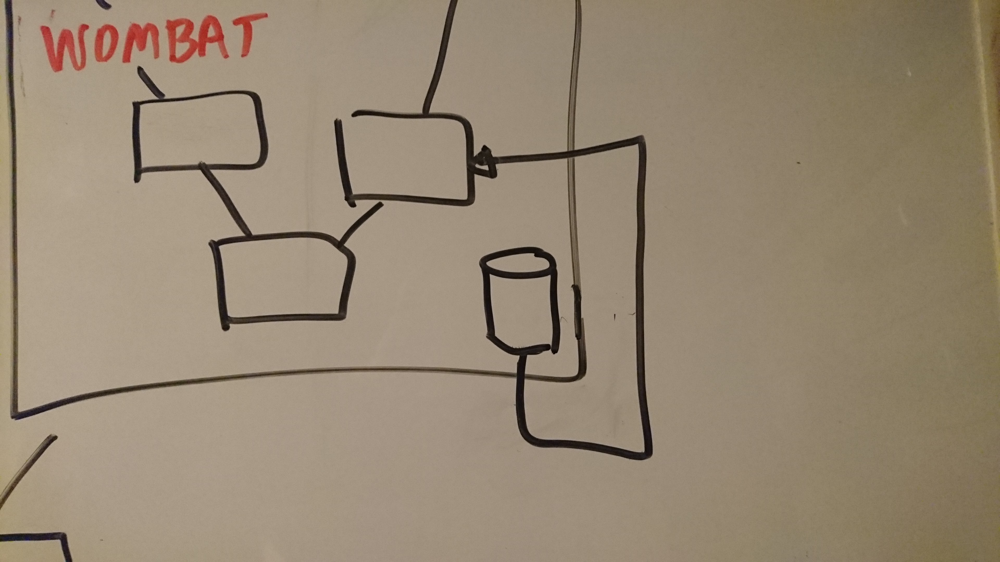Introduce a strange thing and see if somebody notices.
An example
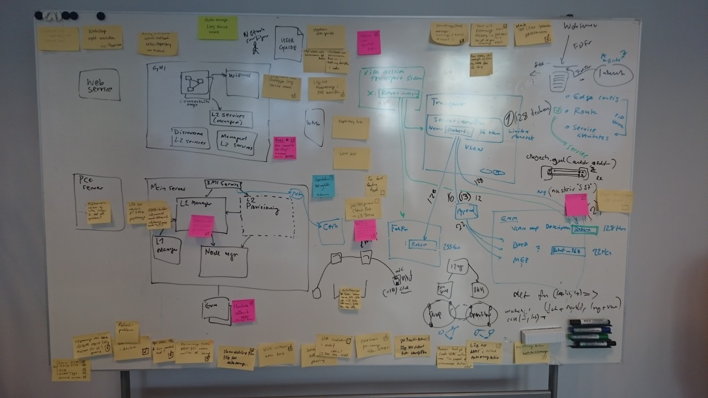Any similarities with real projects are purely coincidential.
Stories in context
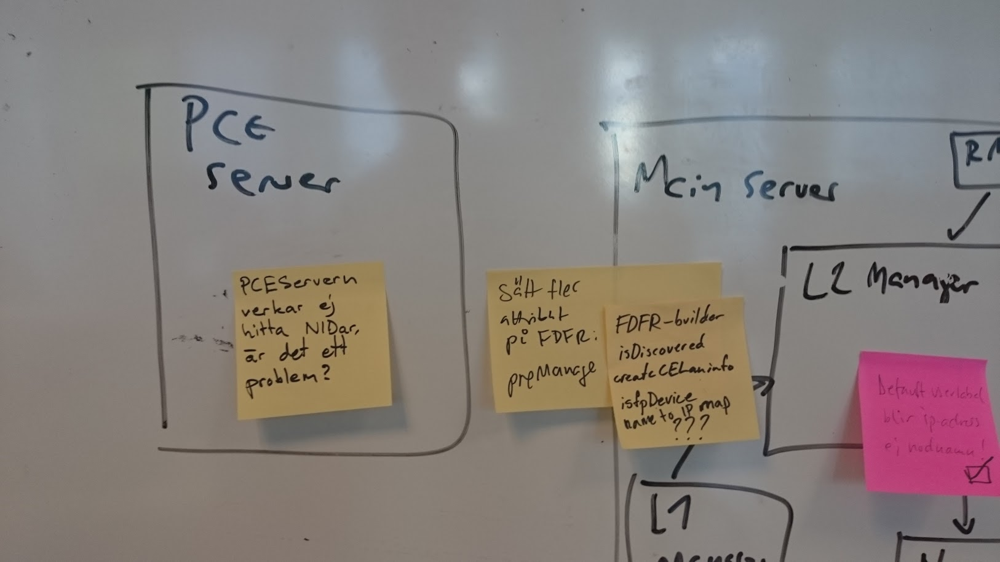People started to put up stories in the architecture.
Florida
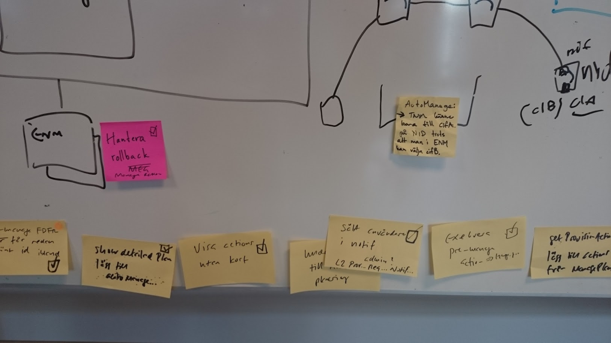They ended up at the bottom when completed.
Another example
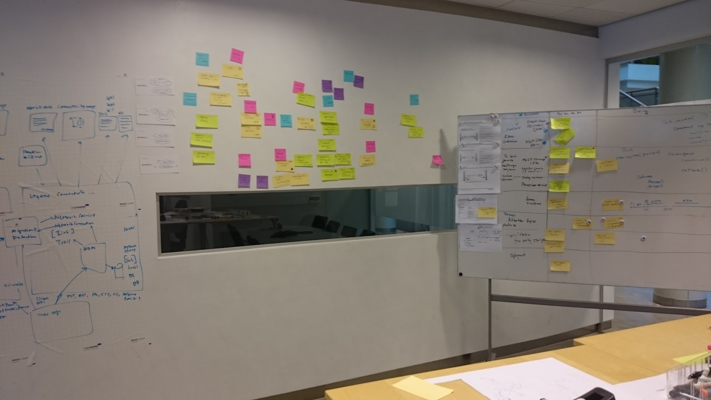Architect, story map and traditional scrum/kanban board.
Celebrate by putting a photo in the freezer
Don't forget to CO2 compensate.
Wild and crazy

Start over every now and then.
People know loads of stuff
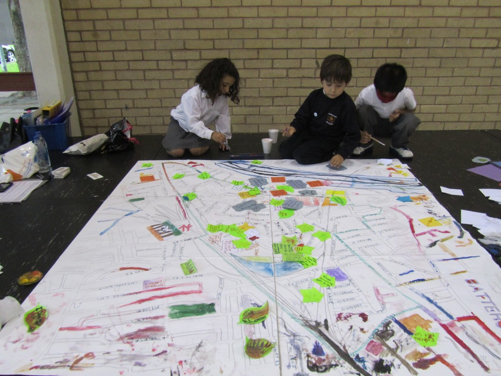Sometimes they just need some help discovering it.
Thank you!
No wombats were harmed in the making of this presentation.